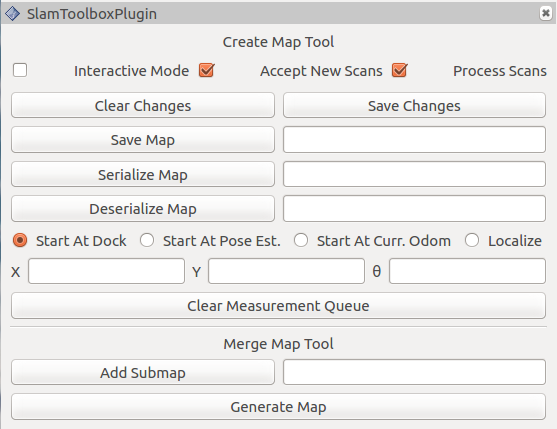

Lecture 4: LIMO's Body — URDF & Xacro
limo_wheel
4.4The Ackermann steering hinge, joint by joint
4.5Sensors as their own tiny links
4.6Four drive modes, one set of macros
4.7Seeing it move — RViz without Gazebo
4.8Summary, checkpoint & glossary
4.1What URDF describes, and why Xacro exists
Every ROS 2 robot that shows up in RViz or Gazebo needs a machine-readable description of its own body: how many rigid parts it has, how big they are, how those parts connect, and where the sensors sit. That description is the URDF — the Unified Robot Description Format, an XML dialect built around exactly two element types. A <link> is a rigid body: it has mass and an inertia tensor (<inertial>), a shape or mesh for rendering (<visual>), and a — usually simplified — shape for physics and collision checks (<collision>). A <joint> connects exactly two links, a parent and a child, and declares how the child is allowed to move relative to the parent. Chain enough links and joints together and you get a kinematic tree — which is precisely what LIMO's URDF is.
For the AgileX LIMO, that tree starts at base_link (the chassis) and fans out to four wheel links, a laser link, a depth-camera link, and an IMU link. Nothing in that description is wildly different between one wheel and the next — same mass, same inertia, same collision cylinder, same joint type — only the position and the left/right mirroring differ. Writing that out four times in raw XML is tedious and, worse, error-prone: fix a typo in the collision radius for one wheel and you now have three correct wheels and one wrong one.
Xacro (XML macros) solves exactly this. It's a preprocessor that runs over your URDF-flavoured XML before the parser ever sees it, expanding <xacro:property> constants, <xacro:macro> templates, <xacro:if>/<xacro:unless> conditionals, and <xacro:insert_block> parameter blocks into plain, boring, verbose URDF. You write the wheel once as a macro; you call it four times with different arguments. The limo_description package leans on this everywhere — one file, limo_properties.xacro, defines every reusable macro (wheels, steering hinges, sensors), and each drive-mode file just calls them.
URDF is the target format: plain XML describing links and joints that robot_state_publisher, RViz, and Gazebo all understand natively. Xacro is not a different format — it's URDF plus macro syntax. Running a file through the xacro tool always produces plain URDF as output; the robot never sees a macro, only the expanded result.

Package layout
Before diving into any single macro, it's worth knowing where everything lives inside the real limo_description package, since you'll be moving between these files constantly this session:
limo_description/
├── CMakeLists.txt
├── package.xml
├── launch/
│ └── display_models_diff.launch.py
├── meshes/ # .dae mesh files referenced by every <mesh filename=.../>
├── rviz/ # saved RViz configs for each drive mode
└── urdf/
├── limo_properties.xacro # shared macros: wheels, steering hinges, sensors
├── limo_gazebo.xacro # shared Gazebo plugin wiring
├── limo_diff/
│ ├── limo_diff.xacro
│ └── limo_diff.gazebo
├── limo_ackerman/
│ ├── limo_ackerman.xacro
│ └── limo_ackerman.gazebo
├── limo_mecanum/
│ ├── limo_mecanum.xacro
│ └── limo_mecanum.gazebo
└── limo_track/
├── limo_track.xacro
└── limo_track.gazeboNotice the pattern repeats at the package level, not just inside the XML: limo_properties.xacro sits once at the top of urdf/, while each drive mode gets its own subfolder holding exactly two files — the robot-description Xacro and its Gazebo counterpart. You'll spend most of this session in limo_properties.xacro and limo_ackerman.xacro, since Ackermann steering is the richest example of joint composition on offer.
Every <mesh filename="..."/> element you'll read this session points into the same meshes/ folder, resolved through the $(find limo_description) substitution rather than a hard-coded path — so the whole package stays relocatable on disk. The main meshes referenced by the macros in this chapter:
| Mesh file | Used by |
|---|---|
limo_wheel_lite.dae | limo_wheel when model_lite is true; also both Ackermann steering-hinge macros |
limo_wheel.dae | limo_wheel when model_lite is false (full-trim wheel) |
mec_wheel_front_left.dae | limo_mecanum_wheel_1 |
mec_wheel_front_right.dae | limo_mecanum_wheel_2 |
limo_base_lite.dae | The base_link visual in limo_ackerman.xacro |
The kinematic tree
Here is the link/joint tree that limo_diff.xacro (the differential-drive variant) produces once fully expanded. Every arrow is a joint; every box is a link.
(chassis)"] -->|continuous
front_left_wheel| FLW[front_left_wheel_link] BL -->|continuous
front_right_wheel| FRW[front_right_wheel_link] BL -->|continuous
rear_left_wheel| RLW[rear_left_wheel_link] BL -->|continuous
rear_right_wheel| RRW[rear_right_wheel_link] BL -->|fixed
laser_joint| LL[laser_link] BL -->|fixed
depth_camera_joint| DCL[depth_camera_link] DCL -->|fixed
depth_camera_to_camera_joint| DL["depth_link
(optical frame)"] BL -->|fixed
imu_joint| IL[imu_link]
Four of those eight joints are the same macro call (limo_wheel) with different wheel_prefix/reflect arguments, and three more are the sensor macros. Only base_link itself is written by hand in each drive-mode file — the tree is wide, but the source is short, and that gap between "how much XML exists" and "how much XML you wrote" is the entire point of Xacro.
It's worth being precise about what Xacro is not. It has no concept of physics, kinematics, or simulation — it never looks at what a <joint> or <link> element means. It is a purely textual/structural macro expander: substitute properties, evaluate the arithmetic inside ${...} expressions, resolve conditionals, splice in block parameters, and emit XML. All of the physical meaning — what a revolute joint does, how an inertia tensor is used — belongs entirely to whatever consumes the resulting URDF: robot_state_publisher, RViz, or a physics engine. Keeping that separation in your head early avoids a common confusion: a Xacro file that expands cleanly with no errors can still describe a physically nonsensical robot, because xacro never checked the physics — only the parsers and simulators downstream do that.
4.2Links and joints — the fundamentals
A joint's type attribute is the single most important thing about it — it decides what degree of freedom, if any, exists between parent and child. URDF defines six types; LIMO's description only ever needs three of them.
| Joint type | Degrees of freedom | Used on LIMO for |
|---|---|---|
fixed | None — welded together | Every sensor: laser_joint, depth_camera_joint, imu_joint, plus the internal base_joint/inertial_joint |
continuous | 1 rotational, unbounded | Every drive wheel — front_left_wheel, rear_right_wheel, etc. A wheel has no reason to stop spinning at some angle |
revolute | 1 rotational, bounded by <limit> | The Ackermann model's front *_steering joints only — the hinge can turn left/right but not spin forever |
prismatic | 1 translational, bounded | Not used anywhere in limo_description — LIMO has no sliding joints |
Every <link> that actually exists in the physical world (as opposed to a bookkeeping frame like base_footprint) carries up to three child elements:
<inertial>— mass in kilograms and a 3×3 inertia tensor (ixx iyy izzplus the off-diagonal terms, usually zero for symmetric parts). This is what the physics engine uses; it is invisible in RViz.<visual>— what gets rendered. LIMO's real parts use imported COLLADA meshes (.daefiles inmeshes/) for a faithful appearance.<collision>— the shape used for contact/overlap checks. Almost always a simplified primitive (a cylinder, a box) rather than the detailed mesh, because collision checking against a high-poly mesh is expensive.
None of the three sub-blocks is strictly required by the parser — a link can legally have zero, one, two, or all three. base_footprint, which shows up in limo_ackerman.xacro as <link name="base_footprint"/>, is the extreme case: an empty link with no inertial, visual, or collision at all. It exists purely as a named, addressable point in the tree — a projection of the chassis origin straight down to ground level — that other tools (like a 2D navigation stack) can use as a stable reference frame without caring about the chassis's actual 3D shape.
Not every link comes out of a macro, either. base_link itself is written by hand, directly in limo_ackerman.xacro, because it's the one part of the robot that genuinely differs between drive modes:
<link name="base_link">
<visual>
<origin xyz="0 0 -0.15" rpy="0 0 1.57" />
<geometry>
<mesh filename="file://$(find limo_description)/meshes/limo_base_lite.dae" scale="1 1 1"/>
</geometry>
</visual>
<collision>
<origin xyz="0 0 0" rpy="0 0 0" />
<geometry>
<box size="${base_x_size} ${base_y_size} ${base_z_size}"/>
</geometry>
</collision>
</link>A few things pop out by comparison with the macro-generated wheel link. There's no <inertial> block here at all — that's deliberately split out into the separate inertial_link you'll meet shortly. The visual mesh's <origin> is non-zero (xyz="0 0 -0.15", rpy="0 0 1.57") because the imported limo_base_lite.dae mesh's own internal origin doesn't line up with where the URDF wants base_link's origin to sit, so the visual is nudged into place rather than the mesh being re-exported. And the collision geometry is a plain box sized from base_x_size/base_y_size/base_z_size properties — the same "detailed mesh for looks, simple primitive for physics" split you already saw on the wheel.
base_footprint is attached back to this hand-written base_link by an equally hand-written joint, not a macro — the last piece of chassis wiring before every remaining link in the tree comes from a macro call:
<joint name="base_joint" type="fixed">
<parent link="base_link"/>
<child link="base_footprint"/>
<origin xyz="0.0 0.0 0.15" rpy="0 0 0"/>
</joint>The +0.15 m here exactly cancels the -0.15 m used in base_link's visual origin above — together they place base_footprint at ground level directly beneath the chassis's geometric center, regardless of where the imported mesh's own coordinate origin happened to be.
A wheel's visual mesh might have thousands of triangles for tread detail. Its collision geometry in limo_properties.xacro is just a <cylinder length="${wheel_length}" radius="${wheel_radius}"/>. Contact physics only needs an approximate outer envelope — spending CPU on tread-level collision would slow simulation for zero practical benefit.
Axis vectors deserve a second look too. Every continuous, revolute, or prismatic joint carries an <axis xyz="..."/> element declaring, in the parent link's local frame, which direction the motion happens around (for rotation) or along (for translation). Get this wrong and the joint is still perfectly valid URDF — it will parse, load, and simulate — it will just rotate or slide the wrong way, which is a much harder bug to spot than a parse error because nothing complains until you watch the robot move incorrectly.
Reading a joint's <origin>
Every joint also carries an <origin xyz="x y z" rpy="roll pitch yaw"/>, which is easy to misread as "where the child link is in space" — it isn't. It's the fixed transform from the parent link's frame to the joint's frame, applied once, before any joint motion happens. For a fixed joint that's the whole story. For a moving joint, the child's actual pose at any instant is that fixed offset composed with whatever the current joint angle contributes around the declared axis. This is exactly why LIMO's sensor placements read as simple, static numbers: <origin xyz="0.103 0 -0.034" rpy="0 0 0"/> on laser_joint means "10.3 cm forward, 3.4 cm down from base_link, no rotation" — full stop, because the joint is fixed and there is no additional motion term to account for.
| Origin field | Units | What it offsets |
|---|---|---|
xyz | metres | Translation from the parent frame to the joint frame — forward/left/up in that frame's convention |
rpy | radians | Roll, pitch, yaw rotation applied in that order, before the joint's own motion is layered on top |
4.3Anatomy of a link — inside limo_wheel
Rather than invent a toy example, let's read the actual macro that builds every non-steered wheel on the real robot. This is limo_wheel, from urdf/limo_properties.xacro, trimmed only of comments:
<xacro:macro name="limo_wheel" params="parent_prefix wheel_prefix reflect model_lite *joint_pose visual_on:=true fixed_on:=false">
<link name="${wheel_prefix}_wheel_link">
<inertial>
<origin xyz="0 0 0" />
<mass value="0.5" />
<inertia ixx="0.01055" ixy="0" ixz="0" iyy="0.00075" iyz="0" izz="0.01055" />
</inertial>
<visual>
<origin xyz="0 0 0" rpy="0 0 0" />
<geometry>
<xacro:if value="${model_lite}">
<mesh filename="file://$(find limo_description)/meshes/limo_wheel_lite.dae"/>
</xacro:if>
<xacro:unless value="${model_lite}">
<mesh filename="file://$(find limo_description)/meshes/limo_wheel.dae"/>
</xacro:unless>
</geometry>
</visual>
<collision>
<origin xyz="0 ${wheel_length/2} 0" rpy="1.57 0 0" />
<geometry>
<cylinder length="${wheel_length}" radius="${wheel_radius}" />
</geometry>
</collision>
</link>
<joint name="${wheel_prefix}_wheel" type="continuous">
<parent link="${parent_prefix}"/>
<child link="${wheel_prefix}_wheel_link"/>
<xacro:insert_block name="joint_pose"/>
<axis xyz="0 ${reflect*1} 0"/>
</joint>
</xacro:macro>Reading it top to bottom:
- The macro signature.
params="parent_prefix wheel_prefix reflect model_lite *joint_pose visual_on:=true fixed_on:=false"— four required arguments, one block argument (the leading*onjoint_posemeans "insert an entire XML element here, not a string"), and two arguments with defaults (:=true/:=false) that the caller can omit. - Inertial block. Mass is 0.5 kg for every wheel. The inertia tensor is deliberately anisotropic —
iyy="0.00075"is far smaller thanixx/izzat0.01055— because Y is the wheel's spin axis. A thin disk has much less rotational inertia about the axis it spins on than about the axes perpendicular to it; the numbers reflect real wheel geometry, not a copy-paste placeholder. - Visual block — the
model_liteswitch.<xacro:if value="${model_lite}">/<xacro:unless>is Xacro's conditional pair — exactly one branch survives expansion. LIMO ships in a "lite" trim and a full trim with visually different wheels, so the macro picks the correct mesh (limo_wheel_lite.daevs.limo_wheel.dae) from a single boolean argument instead of needing two separate macros. - Collision block. A plain cylinder,
wheel_radiusandwheel_lengthcoming from<xacro:property>values set once in the drive-mode file (e.g.wheel_radius="0.045"inlimo_ackerman.xacro) — change the property once, every wheel updates. - The joint.
type="continuous", parented to whatever link the caller passes asparent_prefix(normallybase_link), with its position coming from the insertedjoint_poseblock.axis xyz="0 ${reflect*1} 0"is the spin axis — always Y, withreflectflipping sign so left-side and right-side wheels spin the geometrically correct way for the same positive wheel velocity.
A call site looks like this (from limo_ackerman.xacro, building the rear-left wheel):
<xacro:limo_wheel parent_prefix="base_link" wheel_prefix="rear_left" reflect="1" model_lite="$(arg model_lite)">
<origin xyz="${-wheelbase/2} ${track/2} ${wheel_vertical_offset}" rpy="0 0 0" />
</xacro:limo_wheel>One macro, one call, and you get a fully-formed link plus joint — inertial, visual with the correct mesh, collision, and a correctly-signed drive axis — without a single line of duplicated XML.
Notice that call site writes model_lite="$(arg model_lite)", not model_lite="${model_lite}" — two different substitution syntaxes doing two different jobs. limo_ackerman.xacro declares <xacro:arg name="model_lite" default="true" /> near its top; a xacro:arg is a value that can be overridden from outside the file, typically from a launch file passing xacro:model_lite:=false on the command line, and it's read back with $(arg name) syntax. A xacro:property, by contrast — like wheel_radius or wheelbase below — is purely internal to the Xacro file and read back with ${name}. The macro parameter itself is just called model_lite; whether the value flowing into it came from a launch-time argument or an internal property is invisible to the macro — it only ever sees the final boolean.
The numbers plugged into that call site come from <xacro:property> declarations near the top of limo_ackerman.xacro, not from anything hard-coded in the macro itself:
| Property | Value | Meaning |
|---|---|---|
wheelbase | 0.2 m | Front-to-rear distance between axle centerlines |
track | 0.13 m | Left-to-right distance between wheel centerlines |
wheel_vertical_offset | -0.10 m | How far below the chassis origin the axles sit |
wheel_radius | 0.045 m | Used by every wheel's collision cylinder |
wheel_length | 0.001 m | Collision cylinder thickness — deliberately thin; the file's own comment shows a more realistic 0.045 was tried and left disabled |
base_mass | 2.1557 kg | Mass assigned to the separate inertial_link, not to base_link itself |
That last row is a small but real subtlety worth flagging: limo_ackerman.xacro splits the chassis into two links, base_link (visual + collision only) and inertial_link (inertial only, connected back to base_link by a zero-offset fixed joint called inertial_joint). Functionally the physics engine treats them as one rigid body — a fixed joint doesn't add a degree of freedom — but splitting mass properties from visual/collision geometry into separate links is a pattern you'll see in other ROS 2 robot descriptions too, usually so the mass/inertia numbers can be tuned independently without touching the chassis mesh.
visual_on:=true fixed_on:=false means a call site that omits these two arguments still compiles and still produces a wheel — just always with a visual, and always as a moving joint. If you ever needed a placeholder wheel with no mesh, or a wheel that's rigidly fixed for a locked-axle test rig, forgetting to pass visual_on="false" or fixed_on="true" won't error; it will just silently give you the default behaviour.
Open urdf/limo_properties.xacro and find the limo_wheel macro. Change the collision cylinder's radius by adding + 0.01 to ${wheel_radius} for a quick experiment, re-run ros2 run xacro xacro limo_diff.xacro | check_urdf /dev/stdin, and confirm the parser still accepts it. Then revert your change.
4.4The Ackermann steering hinge, joint by joint
The differential-drive model's front wheels only ever spin — steering happens by driving the left and right sides at different speeds. The Ackermann model is different: it has genuine front-wheel steering, like a car. That means each front wheel needs two degrees of freedom stacked in series: it must be able to turn left/right (steer) and, independently, spin forward/backward (drive). URDF joints are strictly one-DOF each, so the only way to model this is two joints, one link apart.
limo_left_steering_hinge (and its mirror, limo_right_steering_hinge) builds exactly that chain: a small hinge link, connected to the chassis by a revolute joint, which then carries a full wheel link connected to it by a continuous joint.
front_left_steering
±0.5236 rad| FL["front_left
(hinge link, near-massless)"] FL -->|continuous
front_left_wheel| FLW[front_left_wheel_link]
Here's the hinge link and its steering joint, straight from limo_left_steering_hinge in limo_properties.xacro:
<link name="${wheel_prefix}">
<inertial>
<mass value="0.25" />
<inertia ixx="0.00525" ixy="0" ixz="0" iyy="0.00035" iyz="0" izz="0.00525" />
<origin xyz="0 0 0" />
</inertial>
<visual>
<origin xyz="0 0 0" rpy="0 0 0" />
<geometry>
<cylinder length="0.0001" radius="0.0001" />
</geometry>
</visual>
</link>
<joint name="${wheel_prefix}_steering" type="revolute">
<parent link="${parent_prefix}"/>
<child link="${wheel_prefix}"/>
<xacro:insert_block name="joint_pose"/>
<axis xyz="0 0 1" />
<limit lower="-0.523598767" upper="0.523598767" effort="1000" velocity="1.0" />
<dynamics damping="0.0" friction="2.0"/>
</joint>Then the same macro attaches an ordinary wheel link as the child of the hinge — not the child of base_link — with a second, continuous joint whose axis is the wheel's spin axis:
<joint name="${wheel_prefix}_wheel" type="continuous">
<parent link="${wheel_prefix}"/>
<child link="${wheel_prefix}_wheel_link"/>
<origin xyz="0 0 0" rpy="0 0 0" />
<axis xyz="0 1 0"/>
<limit effort="100.0" velocity="10.0"/>
</joint>The right-side macro is the mirror image with one important sign flip: its steering joint uses axis xyz="0 0 -1" instead of "0 0 1". Because the right hinge is also rotated 180° about X in its parent joint's rpy (to face the correct way), flipping the axis sign keeps "positive steering command" meaning the same physical direction (turn left) on both sides.
| Steering joint field | Value | Meaning |
|---|---|---|
lower / upper | ±0.523598767 rad | ±30° — the physical steering range of the real Ackermann servo linkage |
effort | 1000 | Maximum torque (N·m) the joint can exert — set high so the simulated actuator is never the limiting factor |
velocity | 1.0 | Maximum angular speed (rad/s) the steering hinge can turn at |
damping | 0.0 | Viscous resistance proportional to joint velocity — zero here, so no artificial "drag" on the steering |
friction | 2.0 | Static/Coulomb friction the joint must overcome to start moving — a small resistance to prevent the hinge chattering at rest |
0.523598767 rad × (180/π) ≈ 30.0000°. That's not a rounding accident — it's π/6 encoded to nine decimal places, matching the real servo linkage's mechanical steering limit on the physical LIMO chassis. When you command a steering angle beyond ±30° in code, the joint simply won't go there — same as the real robot.
It's also worth contrasting the two joints' limits directly, because the difference tells you something about intent. The steering joint's <limit> carries a real lower/upper — physically meaningful, since a steering hinge that spun forever would tear the tie-rod linkage apart. The drive joint immediately below it, ${wheel_prefix}_wheel, is declared type="continuous" and its <limit effort="100.0" velocity="10.0"/> has no lower/upper at all — URDF's schema simply doesn't require them for a continuous joint, since "how far can it turn" is meaningless when the joint is allowed to spin forever. The hinge link itself is built the same near-massless way as a sensor link (mass 0.25 kg, a 0.1 mm placeholder cylinder, no collision geometry at all) — it exists only to carry the second joint, not to be seen or collided with, which is why its inertia values echo the same pattern you saw on limo_wheel's inertial block, just scaled down.
The differential-drive model has no steering joints at all — it turns by wheel-speed differential. Sketch (on paper or in a comment) what would need to change in limo_diff.xacro if you wanted to retrofit Ackermann-style front steering onto it: which macro calls would you swap, and which two new joint names would appear in the tree?
4.5Sensors as their own tiny links
It would be simpler, structurally, to just draw the laser scanner or the IMU as extra geometry glued onto base_link's existing visual mesh. LIMO's description deliberately does not do this — every sensor gets its own link, connected to the chassis by a fixed joint.
- TF addressability.
robot_state_publisherbroadcasts a TF frame for every link. Give the laser its ownlaser_link, and every other node in the system (RViz, a LaserScan filter, SLAM) can ask TF "where is the laser, right now, relative to the chassis or the map" — impossible if the laser's geometry is buried insidebase_link. - Independent visual/collision. The sensor can have its own simplified collision shape (a small cylinder for the laser, a small box for the camera) instead of inheriting the chassis's collision geometry.
- One-line repositioning. Move a sensor by editing a single
<origin>in its joint — no remodelling of the chassis mesh required.
The laser (limo_laser macro) is the simplest case — one link, one fixed joint:
<xacro:macro name="limo_laser" params="parent_prefix frame_prefix *joint_pose">
<link name='${frame_prefix}_link'>
<inertial>
<mass value="0.1"/>
<inertia ixx="1e-6" ixy="0" ixz="0" iyy="1e-6" iyz="0" izz="1e-6"/>
</inertial>
<visual>
<geometry><cylinder radius="0.02" length="0.01"/></geometry>
</visual>
<collision>
<geometry><cylinder radius="0.032" length="0.016"/></geometry>
</collision>
</link>
<joint type="fixed" name="laser_joint">
<xacro:insert_block name="joint_pose"/>
<child link="${frame_prefix}_link"/>
<parent link="${parent_prefix}"/>
</joint>
<gazebo reference="${frame_prefix}_link"><material>Gazebo/Yellow</material></gazebo>
</xacro:macro>Called in limo_ackerman.xacro as <xacro:limo_laser parent_prefix="base_link" frame_prefix="laser"><origin xyz="0.103 0 -0.034" rpy="0 0 0"/></xacro:limo_laser> — mounted 10.3 cm forward and 3.4 cm below the chassis origin.
The depth camera (limo_depth_camera) is where it gets interesting: it defines two links and two fixed joints, not one.
<link name='${frame_prefix}_link'> ... </link> <!-- physical mount, box 0.02 x 0.06 x 0.015 -->
<joint type="fixed" name="depth_camera_joint">
<xacro:insert_block name="joint_pose"/>
<child link="${frame_prefix}_link"/>
<parent link="${parent_prefix}"/>
</joint>
<link name="depth_link"></link> <!-- zero-size: the optical frame -->
<joint name="${frame_prefix}_to_camera_joint" type="fixed">
<origin xyz="0 0 0" rpy="${-M_PI/2} 0 ${-M_PI/2}"/>
<parent link="${frame_prefix}_link"/>
<child link="depth_link"/>
</joint>ROS convention (REP-103) says every physical mount frame has X pointing forward, Y pointing left, Z pointing up. But camera driver conventions — inherited from decades of computer-vision and OpenCV tooling — instead expect an optical frame with Z pointing forward (out of the lens), X pointing right, and Y pointing down. These two conventions disagree by a fixed 90°/90° rotation, not a robot-specific calibration. depth_camera_link is the REP-103-style mount frame you'd use to reason about "where is the camera on the chassis"; depth_link is the same physical point rotated into the convention the depth image driver actually publishes against. rpy="${-M_PI/2} 0 ${-M_PI/2}" is that fixed reconciliation, baked in once so nobody downstream has to think about it again.
The IMU (limo_imu) follows the same one-link, one-fixed-joint pattern as the laser, just smaller — mass 0.01 kg, a 1 mm cube for visual/collision, mounted via imu_joint. Its link exists purely so IMU readings can be published in a frame TF knows about, not because a 1 mm cube meaningfully affects physics.
The practical symptom of getting the two camera frames mixed up is easy to recognise once you've seen it once: if you subscribe to a depth image topic and try to transform its points using depth_camera_link instead of depth_link, the resulting point cloud appears rotated 90° in two axes at once — "sideways and pointing at the floor" is the classic description of it. Depth and RGB image data are published in the optical convention by the underlying camera driver, so any transform involving that image data needs to go through depth_link, never the mount link. All three sensor macros share one more property worth naming explicitly: each one's <gazebo reference="${frame_prefix}_link"><material>Gazebo/Yellow</material></gazebo> block is a Gazebo-only annotation, invisible to RViz and to robot_state_publisher — it colors the sensor yellow purely so it's visually distinguishable from the chassis when you do eventually load the model into simulation.
4.6Four drive modes, one set of macros
LIMO physically reconfigures between four drive modes, and limo_description mirrors that with four top-level Xacro files: limo_diff.xacro, limo_ackerman/limo_ackerman.xacro, limo_mecanum/limo_mecanum.xacro, and limo_track/limo_track.xacro. Every one of them starts the same way — including the same two files:
<xacro:include filename="$(find limo_description)/urdf/limo_properties.xacro" />
<xacro:include filename="$(find limo_description)/urdf/limo_ackerman/limo_ackerman.gazebo" />(the second include swaps to that mode's own .gazebo file — e.g. limo_diff.gazebo for the diff variant — which wires up gazebo_ros plugins for the simulated drivetrain). Each file then hand-writes its own base_link chassis link and calls the shared wheel/sensor macros from limo_properties.xacro in a pattern specific to that drivetrain:
Compare the limo_wheel call site you already read against a real Mecanum call site — same macro-composition idea, visibly different visual placement because the roller geometry is asymmetric:
<!-- limo_mecanum_wheel_1, front-left roller mesh -->
<visual>
<origin xyz="0.01 -0.064 0.064" rpy="0 0 -1.57" />
<geometry>
<mesh filename="file://$(find limo_description)/meshes/mec_wheel_front_left.dae" />
</geometry>
</visual>Notice the visual <origin> is non-zero here, unlike limo_wheel's xyz="0 0 0" — the Mecanum mesh's own internal origin doesn't line up with the joint's rotation axis the way the simple wheel mesh does, so the macro compensates with an explicit offset and a -90° yaw. The joint block underneath it, though, is identical in shape to limo_wheel's — same continuous type, same axis xyz="0 ${reflect*1} 0" pattern — which is exactly why it's fair to call this "the same macro-composition idea": the visual geometry changed, but the joint semantics didn't.
| Mode | Wheel macro(s) used | Front steering? | Holonomic? |
|---|---|---|---|
limo_diff | limo_wheel × 4 (all continuous) | No | No — differential drive |
limo_ackerman | limo_left_steering_hinge / limo_right_steering_hinge (front) + limo_wheel × 2 (rear) | Yes — ±30° revolute hinges | No |
limo_mecanum | limo_mecanum_wheel_1 / limo_mecanum_wheel_2 × 4, direction-specific meshes | No | Yes — omni rollers allow sideways/diagonal motion |
limo_track | Not wheel macros — continuous track-belt links following the same macro-composition pattern | No | No |
Three details worth pulling out of that table. First, the Mecanum macros are split into _1 and _2 rather than sharing one macro with a mirrored mesh, because Mecanum wheels have their roller direction baked directly into the mesh geometry — a front-left wheel and a front-right wheel are not mirror images of the same mesh, they're genuinely different meshes (mec_wheel_front_left.dae vs. mec_wheel_front_right.dae), so a single-macro-plus-reflect approach (which works fine for the plain cylindrical diff/Ackermann wheels) doesn't apply. That's also the mechanical reason Mecanum is the only holonomic mode in the table: each wheel's angled rollers convert a spin into a force with both a forward and a sideways component, and combining four independently-driven wheels like that is what lets the chassis translate sideways or diagonally without turning — something no arrangement of plain cylindrical wheels, however they're steered, can do.
Second, limo_track doesn't have wheel links or drive-wheel joints at all — it replaces the wheel section of the file with a pair of continuous track-belt links (one per side), each attached to base_link by its own continuous joint, following exactly the same idea as limo_wheel: one macro-shaped block of inertial/visual/collision/joint per side, called twice with a reflect-style argument for left vs. right. Steering on a tracked vehicle comes from driving the two belts at different speeds, the same differential principle as limo_diff, which is why the table marks it as non-holonomic with no front steering, despite looking mechanically nothing like the wheeled variants.
Third, limo_ackerman.xacro also declares a main_steering_link and main_steering joint that isn't part of either steering-hinge macro — a separate revolute joint representing the physical steering rack's mechanical center, present so that a single actuator command can be mapped to both front wheels' independent hinges by a controller, mirroring how the real chassis has one steering servo driving a linkage to both wheels.
Every drive-mode file ends up short — a chassis link plus a handful of macro calls — precisely because none of them re-implement wheel or sensor geometry. All of that complexity lives exactly once, inside limo_properties.xacro. Add a fifth drive mode tomorrow (say, a swerve-drive variant) and you would still call the unmodified limo_laser, limo_depth_camera, and limo_imu macros — only the wheel section of the file would need new logic. This is also why, when something is wrong with a sensor's position or a wheel's inertia on every drive mode simultaneously, the bug almost always lives in limo_properties.xacro rather than in any one of the four drive-mode files — fix it once there and all four variants inherit the fix the next time they're expanded.
Compare limo_diff.xacro and limo_ackerman.xacro side by side (both call limo_laser, limo_depth_camera, and limo_imu with near-identical arguments). Identify every joint name that exists in the Ackermann tree but has no equivalent in the diff tree, and explain in one sentence each why the diff model doesn't need it.
4.7Seeing it move — RViz without Gazebo
You don't need a physics simulator to sanity-check a URDF/Xacro model — you just need two ROS 2 nodes and RViz. robot_state_publisher reads the robot's description (expanded from Xacro) and, for every joint, listens for its current position; using the kinematic tree, it then computes and broadcasts a TF transform for every single link, fixed or moving. joint_state_publisher_gui is the other half — for every non-fixed joint in the model, it puts up a slider, and publishes whatever the sliders currently read on /joint_states.
The limo_description package wires both of these together in a ready-made launch file:
Drag any wheel's slider in the GUI and you'll see it spin in RViz — but nothing on the chassis or sensors moves, because those joints are fixed and never appear as sliders at all. This is a genuinely useful check: if a joint you expect to be movable doesn't show up as a slider, its type in the Xacro is probably wrong (or defaulted to fixed somewhere you didn't intend).
It's worth naming the three processes this launch file actually starts, and what each one is responsible for — you'll be reasoning about this exact trio for the rest of the course whenever something in RViz looks wrong:
| Process | Reads | Publishes |
|---|---|---|
joint_state_publisher_gui | Slider positions you drag by hand | /joint_states — one position value per non-fixed joint |
robot_state_publisher | The expanded URDF (via robot_description parameter) + /joint_states | The full TF tree — a transform for every link, fixed and moving |
rviz2 | TF tree + the URDF's visual meshes/materials | Nothing — it's a viewer, purely a subscriber |
The dependency runs in one direction only: joint_state_publisher_gui knows nothing about geometry, only joint names and limits pulled from the URDF; robot_state_publisher knows nothing about sliders, only the current joint angles it's told and the fixed geometric relationships baked into every joint's <origin>; RViz knows nothing about either — it just draws whatever frames and meshes currently exist in TF. This is exactly the separation Lecture 5 builds on, where you'll start publishing joint states from real code instead of GUI sliders, without robot_state_publisher or RViz needing to change at all.

This exact workflow — no Gazebo, no hardware — is how you'll debug TF and joint-naming problems fastest. If a frame is missing or a wheel spins around the wrong axis, you'll find it here in seconds rather than after a slow Gazebo world load. Lecture 5 picks this up directly: once TF is being published correctly by robot_state_publisher, you'll learn to read and query the transform tree it builds.
4.8Summary, checkpoint & glossary
URDF describes LIMO's body as a tree of rigid <link> elements connected by typed <joint> elements; Xacro is the macro layer that lets limo_properties.xacro define each recurring part — wheel, steering hinge, laser, depth camera, IMU — exactly once and reuse it across four different drive-mode files. You've now read the real macros that build every link on the robot, traced why Ackermann steering needs two joints in series, and seen why sensors get their own links instead of being drawn onto the chassis mesh.
None of this required Gazebo, ros2_control, or a single line of Python — every artifact in this lecture was static XML plus the xacro and check_urdf command-line tools. That's intentional: a URDF/Xacro description is a standalone contract about the robot's shape, and it's worth being able to read, expand, and validate entirely on its own before any simulator or controller framework gets layered on top.
- Explain the difference between a URDF
<link>and a<joint>, and name all four joint types LIMO's description actually uses (or doesn't). - Read a Xacro macro definition and identify its required params, its block param (
*joint_pose), and its defaulted params. - Trace the
limo_wheelmacro from call site to expanded inertial/visual/collision/joint output. - Explain why the Ackermann front wheels need two joints (revolute + continuous) instead of one, and what ±0.523598767 rad means physically.
- Explain why
depth_camera_linkanddepth_linkare two different frames, and which one image data actually publishes against. - Compare how
limo_diff,limo_ackerman,limo_mecanum, andlimo_trackreuse the same macros differently. - Launch
display_models_diff.launch.pyand use the joint state sliders to verify a model's joints move as expected. - Explain the three-process relationship between
joint_state_publisher_gui,robot_state_publisher, and RViz — and where in that chain a broken frame or wrong axis would first become visible. - Locate every file inside
limo_description/urdf/and state, without opening it, roughly what it contains.
Connection to the course. Everything in this lecture is scaffolding for Lecture 5: TF2 & RViz. The link/joint tree you've been reading as static XML is exactly what robot_state_publisher turns into a live TF tree at runtime — every link name you've seen here (base_link, front_left_wheel_link, depth_link, imu_link) becomes a TF frame you'll query, broadcast to, and reason about for the rest of the course, from sensor fusion through navigation.
- URDF
- Unified Robot Description Format — an XML dialect describing a robot as links connected by joints.
- Xacro
- XML macros for URDF; a preprocessor that expands properties, macros, and conditionals into plain URDF.
- Link
- A rigid body in the model, described by up to three blocks: inertial, visual, collision.
- Joint
- A typed connection between exactly one parent link and one child link, defining their allowed relative motion.
- continuous / revolute / fixed
- Joint types: unbounded rotation (wheels), bounded rotation with a
<limit>(steering hinges), and no motion at all (sensors, structural welds). - Inertial / visual / collision
- The three optional sub-blocks of a link: mass/inertia for physics, appearance geometry for rendering, and simplified geometry for contact checks.
- Macro
- A Xacro
<xacro:macro>template — parametrized XML that can be instantiated multiple times with different arguments. - Optical frame
- A camera-specific coordinate convention (Z-forward, X-right, Y-down) used by image drivers, distinct from REP-103's robot convention (X-forward, Y-left, Z-up).
- xacro:property
- A named constant (e.g.
wheel_radius,wheelbase) declared once and referenced via${...}arithmetic expressions throughout a Xacro file. - REP-103
- The ROS Enhancement Proposal defining standard coordinate conventions — X-forward, Y-left, Z-up — that every physical mount frame in a well-formed robot description should follow.
Common mistakes
- Swapping parent/child in a joint. A joint's
<parent>/<child>order defines which way the kinematic tree flows — get it backwards and the whole subtree attaches in the wrong place (or the model fails to parse if it creates a cycle). - Mesh filename case-sensitivity.
limo_wheel_lite.daeworks fine on the filesystem you tested on, but Linux filesystems are case-sensitive —Limo_Wheel_Lite.daein the URDF againstlimo_wheel_lite.daeon disk will fail to load, often silently in some tools and loudly in others. - Trusting defaulted macro arguments.
visual_on:=true fixed_on:=falseonlimo_wheelmeans omitting them doesn't error — it silently gives you the default behaviour, which may not be what a given call site actually needs. - Flipping the steering axis sign. The left hinge uses
axis xyz="0 0 1"and the right uses"0 0 -1"— copy one macro call into the other side without checking which macro (and axis) you're calling, and "steer left" ends up steering the two front wheels in opposite directions.